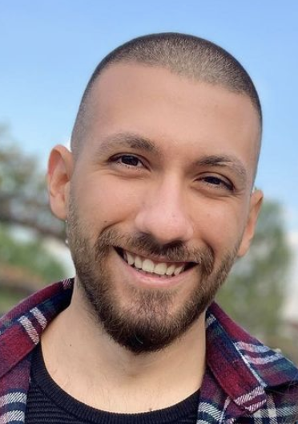

Arda AYDAR

Summary
I am a hardworking and dedicated game developer who tries to be a web developer.
The web developer world deserves..
But not the one it needs right now
Education
- Bachelor degree in Biomedical Engineering, Pamukkale University (2016-2021)
Experience
Barista - Arabica Coffee House
May 2019 - Nov 2020
Game Develoepr - Funika Games
Feb 2022 - Oct 2022
Game Developer - Fokur Design Studio
Oct 2022 - Present
Skills
- Game Development: ⭐️⭐️⭐️⭐️⭐️
- Multiplayer Game Development: ⭐️⭐️⭐️⭐️⭐️
Awards and Certifications
- Unity Game Design and Development - Michigan State University (Feb 2022)